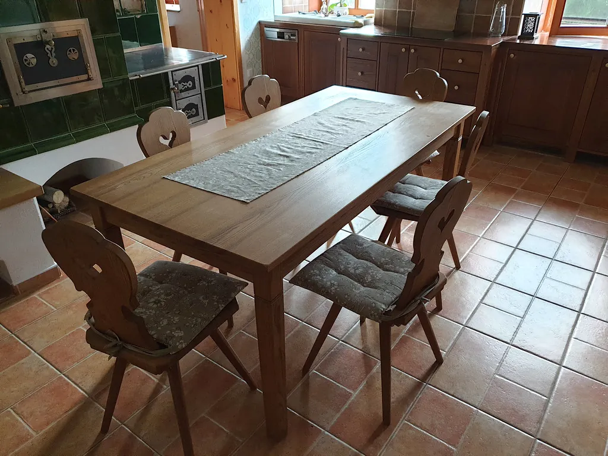
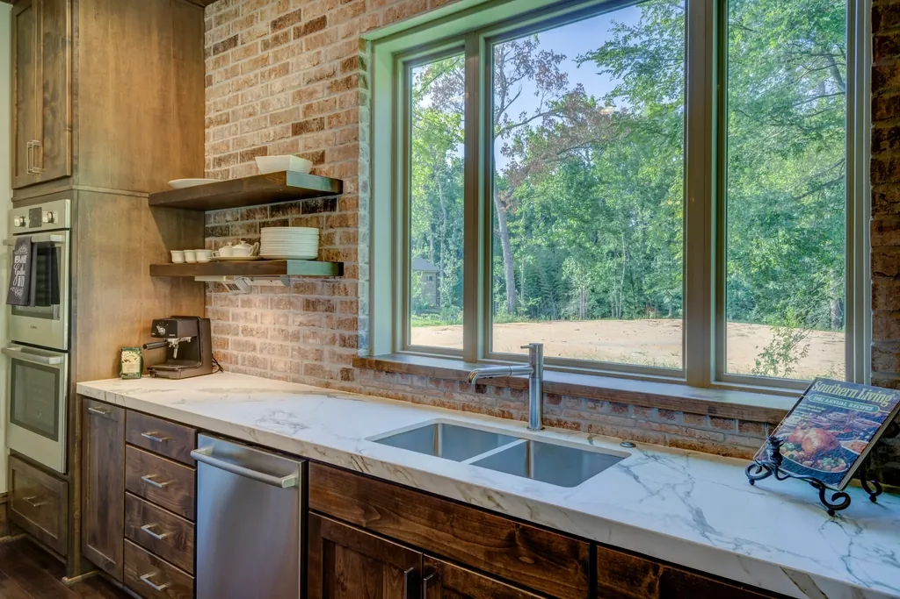
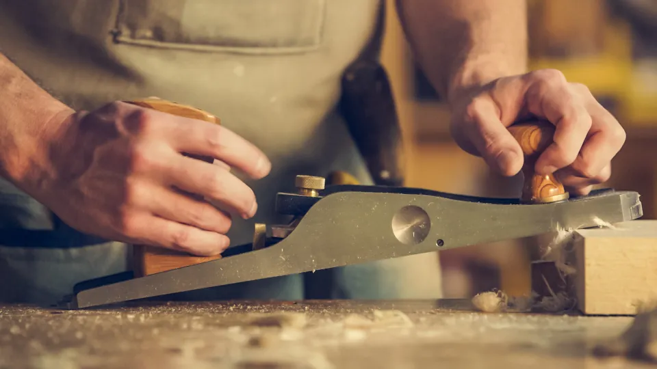
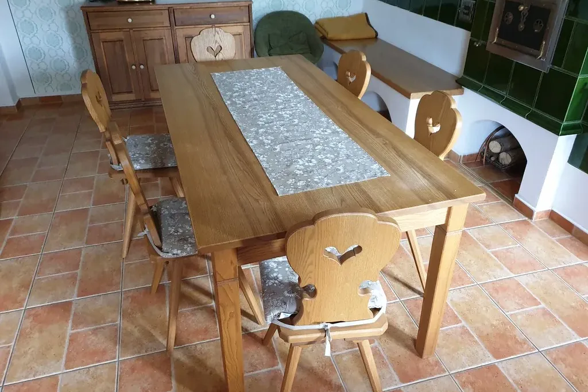
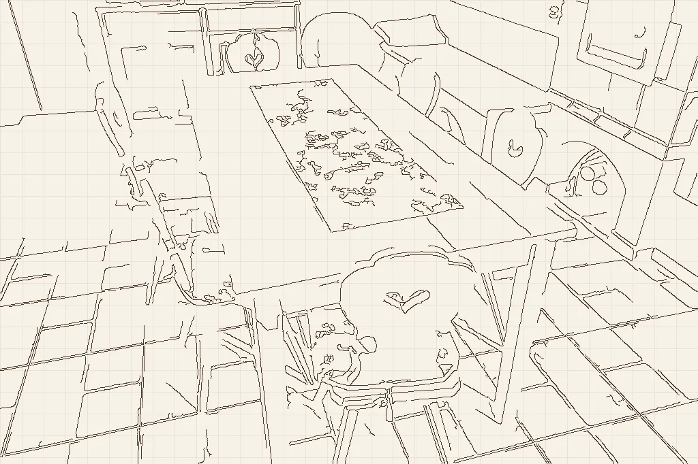
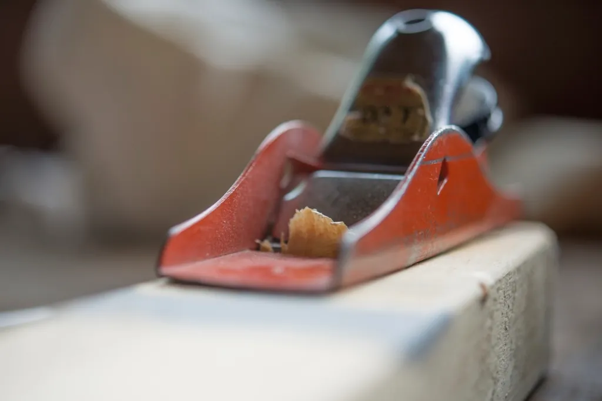

Hrast
Tvrd i težak, traje generacijama. Najbolji za stolove i stepenice.
tvrdoća 5/5svetlo-smeđ
Kuhinje, trpezarijski stolovi, komode i plakari — merimo kod vas, crtamo predlog, pa tek onda pravimo. Hrast, orah i jasen, bez iverice.


Posle merenja dobijate crtež sa merama i cenom. Menjamo ga dok ne bude kako želite — tek kad ga odobrite, režemo prvu dasku. Prevucite preko slike.


SkicaGotovoDolazimo sa metrom i uzorcima drveta. U Kraljevu i do 60 km bez troška.
Šaljemo crtež sa merama i tačnom cenom. Menjamo dok ne odobrite.
Sušeno drvo, spojevi na čep i lepak, uljeni vosak umesto laka.
Donosimo, montiramo i odnosimo ambalažu. Posle nas se samo briše prašina.

Tvrd i težak, traje generacijama. Najbolji za stolove i stepenice.
Taman i plemenit, sa izraženom šarom. Za komode, kredence i detalje.

Svetao i elastičan — po njemu smo dobili ime. Za kuhinje i stolice.
Javljamo se istog dana i dogovaramo termin za merenje. Ako imate sliku prostora, pošaljite je posle na Viber.